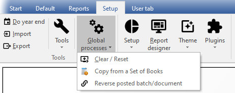

Global processes menu
This menu allows you to perform global processes in a Set of Books, such as to Clear / Reset a Set of Books, Copy from a Set of Books and reverse transactions in posted batches (journals) and/or documents.
|
|
It is advisable to create a backup of your current Set of Books before accessing any options on the Global processes menu. Additionally, it is crucial to be absolutely certain before performing any of these functions. Once these options are executed, they cannot be easily reversed or cancelled. The only way to undo any changes made is to restore the Set of Books from the backup. |

To access the Global processes menu:
- On the Setup ribbon, select Global processes. A list of the three (3) menu options will be displayed.

- Select one of the three (3) available options:
- Clear / Reset - This option allows you to clear all transactions and balances in a Set of Books. By selecting this option, you will effectively reset the Set of Books, deleting all transactions and balances. However, you also have the option to retain all documents and set them to unposted status.
- Copy from a Set of Books - This option allows allows you to copy data from a chosen Set of Books into the currently active (open) Set of Books. By selecting this option, all the existing data in the active Set of Books will be replaced with the data from the selected Set of Books.
- Reverse posted batch / document - Reverse posted batch / document - This feature enables you to reverse or cancel transactions in posted batches (journals) and documents.
- Reverse posted batch (Journal) - This feature allows you to cancel transactions that were processed in batches (journals) which have already been updated (posted) to the ledger. By selecting this option, all the transactions that were previously updated (posted) to the ledger will be cancelled and removed from the transaction file.
The cancelled transactions will be automatically imported to the selected batch (journal). At this point, you have the option to either erase or delete the entire batch (journal). If you wish to keep the cancelled (reversed) batch, you can edit and correct the transactions, balance the batch, print the batch list, and post it to the ledger.
- Reverse posted document - This feature cancels the documents as well as any transactions that were generated by the documents (such as invoices and credit notes, purchases, and supplier returns) after they were updated (posted) to the ledger. The cancelled (reversed) document can then be accessed as an unposted document, which you can edit in the Documents section of the Default ribbon and then post (update) to the ledger. If you do not need to update (post) the document to the ledger, you may also choose to delete it using the Edit → Delete - Documents. option on the Default ribbon.